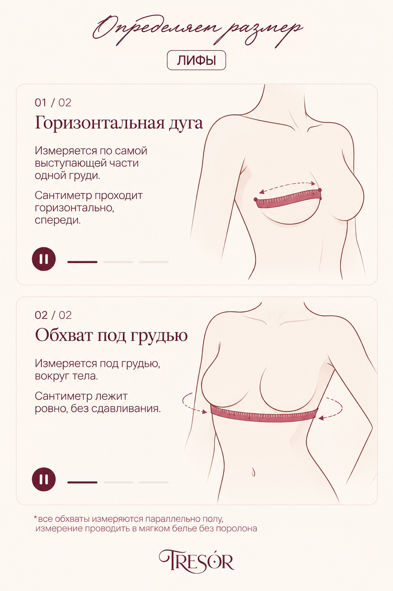

ОНЛАЙН-БРА-ФИТТИНГ
Бельё, которое
сидит.
Всего две мерки — и мы подскажем, с какого размера начать примерку.
01 / СНИМАЕМ МЕРКИ
Сначала сантиметр.
Понадобится мягкая сантиметровая лента. Измеряй себя в мягком белье без поролона. Не перетягивай ленту.

Горизонтальная дуга
Измерь одну грудь спереди, по самой выступающей части, от внешнего края до внутреннего. Сантиметр проходит горизонтально.
Обхват под грудью
Измерь окружность корпуса непосредственно под грудью. Лента параллельна полу и не сдавливает тело.
Если грудь асимметрична: измерь горизонтальную дугу обеих грудей и для расчёта используй мерку большей.
02 / ТВОИ МЕРКИ
Теперь посчитаем.
03 / ВАЖНО ЗНАТЬ
Размер — начало, а не финал.
Даже при точных мерках посадка зависит от формы груди, конструкции чашки и конкретной модели. Наш расчёт — ориентир по практической таблице TRESÓR.
Всегда ориентируйся прежде всего на свои ощущения: размерные сетки у разных производителей отличаются.
Как понять, что бюстгальтер сидит правильно?
- Пояс. Расположен параллельно полу, плотно прилегает и не задирается на спине. Именно пояс обеспечивает основную поддержку груди.
- Чашки. Грудь полностью находится в чашках, ничто её не пережимает. Верхний край не должен делить грудь пополам: если грудь выпирает над ним, чашка может быть мала или не подходить по форме.
- Косточки. Проходят под грудью, огибают её основание и не давят на мягкие ткани, в том числе со стороны подмышек.
- Перемычка. В бюстгальтере с косточками центральная часть между чашками должна прилегать к грудине, а не висеть перед ней.
- Бретели. Комфортно лежат на плечах и не врезаются в кожу. Их длину регулируют с учётом роста, пропорций корпуса и положения груди — не для того, чтобы подтянуть грудь к подбородку.
Грудь должна находиться В чашке, а не пытаться из неё сбежать! 🤎